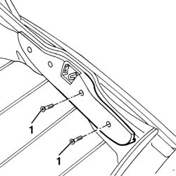
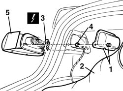
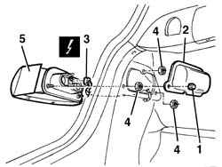

5540A56 dipped/main beam electrical wiring - check component operation, line continuity and repair contacts - includes relay replacement if necessary
- Path
- Procedures > 55 ELECTRICAL EQUIPMENT > 5540 EXTERIOR LIGHTING > 5540A lighting > 5540A56 dipped/main beam electrical wiring - check component operation, line continuity and repair contacts - includes relay replacement if necessary
- Kind
- repair procedure (removal / refitting; the operation number is the code)
- Applies to
- all engines; all production periods
- Interactive page
- https://sloeber94.github.io/elrnDB-a156/en/#/3238439
Applies to: all engines; all production periods
 Removing
Removing
 Refitting
RefittingOpen the boot lid and undo the two side bolts fixing the inner trim.

Applies to: all engines; all production periods
1. Undo the bolts and remove the light protection.
2. Move the side trim.
3. Disconnect the electrical connection.
 | Name | Connector |
|---|---|---|
3 | Rear left light cluster |
| Name | Connector |
|---|---|---|
3 | Rear right light cluster |
4. Undo the nuts fixing the light.
5. Remove the tail-light.

Applies to: all engines; all production periods
Refitting
RemovingCheck that the light cluster is not damaged.
Fit the rear light cluster fixing it using the nuts.
Connect the electrical connection
Check the operation of the rear lights.
Refit the side trim.
Fit the light protection, fixing it using the bolts.
Tighten the two side trim bolts.
Check the operation of the side lights, the direction indicators and the brake lights.
Applies to: all engines; all production periods; only with equipment: Station Wagon
Removing
RefittingOpen the tailgate.
1. Unscrew the nuts.
2. Remove the light protection.
3. Disconnect the electrical connections.
| Name | Connector |
|---|---|---|
3 | Rear left light cluster |
| Name | Connector |
|---|---|---|
3 | Rear right light cluster |
4. Undo the nuts fixing the light cluster.
5. Remove the tail-light.

Applies to: all engines; all production periods; only with equipment: Station Wagon
Refitting
RemovingCheck that the light cluster is not damaged.
Fit the rear light cluster fixing it using the nuts.
Connect the electrical connection
Check the operation of the rear lights.
Check the operation of the side lights, the direction indicators and the brake lights.
Fit the light protection, fixing it using the nuts.